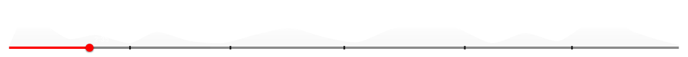

Overview
A faster connection between viewers and creators
Conceptual UX project. I redesigned the way users discover content on YouTube, using data the platform already has but doesn't use for discovery.
The problem
Deciding what to watch: choice overload
Every day, 3 million videos get uploaded to YouTube. To pick one, users have almost nothing to go on: a thumbnail, a title, a few seconds of doubt. The decision comes before the enjoyment — creating friction at the exact moment that matters most: the first one.
Key insight
"Most Replayed" for Discovery
YouTube already knows exactly where each video hooks people: the peaks on the progress bar, "most replayed." That data tells the platform which moment of a video makes people stay. Today it's only used inside the video you've already chosen. What if it were used to help you choose?
With Gemini now integrated into YouTube's recommendation engine, this idea is even more viable: multimodal analysis already identifies, frame by frame, what makes a video hook viewers — which would directly reinforce automatic selection of these moments.

The solution
A feed that starts playing before you decide
When you open the app, the player starts automatically with content from your creators — not the full video, but a preview built from their highest-retention moments. If it hooks you, you keep watching. If not, it automatically moves to the next one.
Alongside it, two types of cards: individual videos and themed collections (salsa dancing, Costa Rican politics, whatever). Entering a collection changes the player entirely — it fills with content from that theme only. Old-but-good content, with strong engagement and watch time, gets a real second chance without competing against what's freshly uploaded.